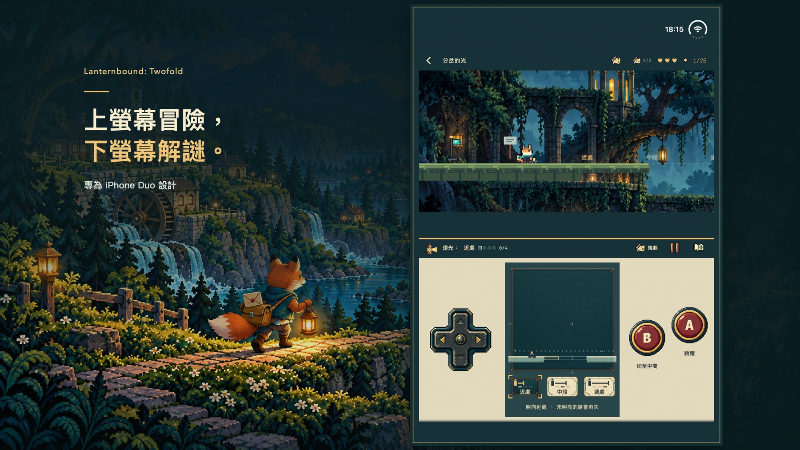

宣傳插畫；實際遊戲畫面請見下方。
每封信，都讓路再近一點。
風暴沖斷了道路，新地圖又遺漏了一些人家。你是一隻年輕的狐狸郵差，替鄰居傳遞消息，也帶著一封寫給久未回信的恩師的私信。一封信引出下一段旅程；送達十二封主線信件，就能抵達完整結局，再回到谷中看看自己留下的改變。
12故事章節
12可掌握的道具
24可選紀念品

iPhone Duo
上方冒險，下方規劃。
世界在上方展開，地圖、道具與熟悉的按鍵留在下方。使用 Duo 內側螢幕，讓遊戲世界位於操作區上方；支援的平展配置也保留相同分工。
- 方向鍵移動、A 跳躍、B 使用目前的道具。
- 開啟規劃暫停行動，查看地圖與路線，準備好後回到即時遊戲。
- 在下方布置機關，在上方完成跳躍。你的規劃會改變能夠走過的路。
別只走最顯眼的路。
循著蛾形標記鑽入暗道，向上攀登尋找岔路，或下到隧道與隱藏房間。走過的地方，也可能藏著第一次沒注意到的回路。每章兩件可選紀念品，各自帶著一段小故事。


一個道具學會操作，兩個道具改變思路。
用燈光顯現道路，用迴旋鏢敲響鈴鐺，讓平台停住、鏡面轉向，或讓回聲替你壓住開關。每章圍繞目前的道具安排四處主要挑戰，再讓指定的兩種道具接力配合；有些岔路還會改變使用順序。

宣傳合成圖，包含 目前遊戲 的實際遊戲畫面。查看海報 ↗

準備中 · 尚未送審或開放購買
完整旅程，一次買斷。
計畫作為 Duo 專屬付費版本推出。一次購買包含全部十二章，無廣告、訂閱或 App 內購買。美國計畫售價 US $9.99；其他地區最終價格及上架情況以正式 App Store 頁面為準。
計畫 US $9.99支援 ↗